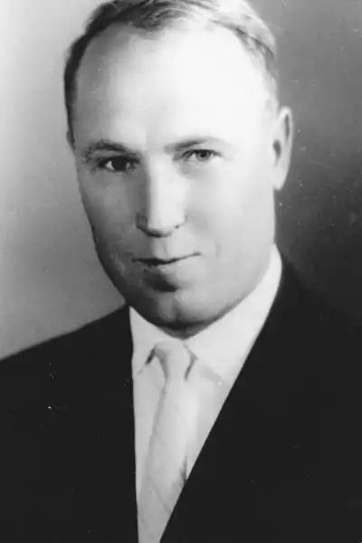

Дмитро Міщенко
Дмитро Олексійович Міщенко — український письменник, кандидат філологічних наук з 1955р.
Народився 18 листопада 1921р. в с. Степанівка Перша, тепер Приазовського р-ну Запорізької області. Учасник Великої Вітчизняної війни. Закінчив 1951р. Київський університет. Був на видавничий роботі, зокрема 1956—1961 — заступником головного редактора Держлітвидаву України, 1964—1973 — головним редактором видавництва "Радянський письменник" (з 1991 — "Український письменник"). Автор збірок повістей та оповідань "Сини моря" (1955), "Батьківська лінія" (1960), "Доля поета" (1961), "Очі дівочі" (1964), "Ніна Сагайдак" (1966), "У морі затишку немає" (1970), "Віра, надія, любов" (1971), "Найвищий закон" (1978), "Друге заміжжя" (1980), а також романів "Чому не сходяться дороги" (1963), "Вітри приносять грозу" (1968), "Честь роду" (1977), повісті "Полювання на жар-птицю" (1990, увійшла до однойменної збірки), історичних романів "Сіверяни" (1959), "Синьоока Тивер" (1983), "Лихі літа ойкумени" (1985), "Розплата" (1987). Міщенко пише про сучасність і героїчне минуле українського народу. Опублікував монографію "Розвиток реалізму в творчості М. Коцюбинського" (1957). Окремі твори Міщенка перекладено російською, болгарською, словацькою та англійською мовами. За збірки "Полювання на жар-птицю" (1990) та "Особисто відповідальний" (1991) удостоєний Державної премії України ім. Т. Г. Шевченка (1993).